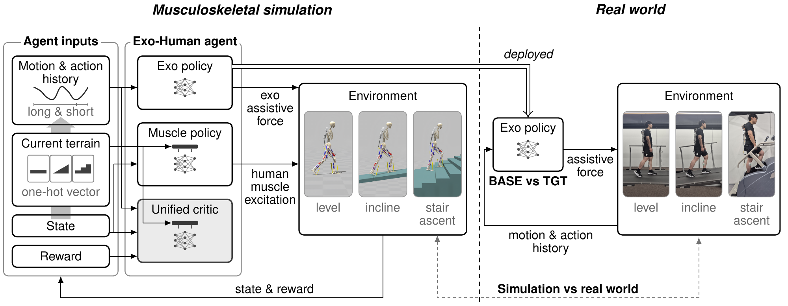
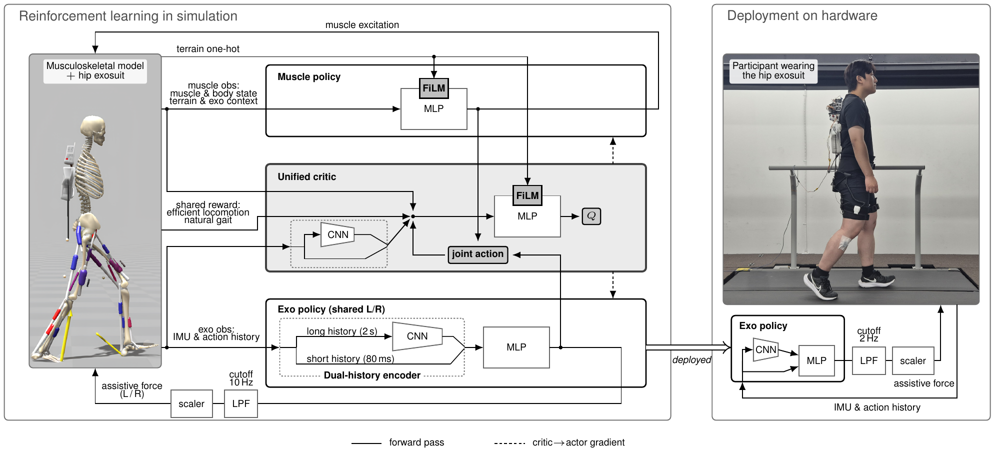
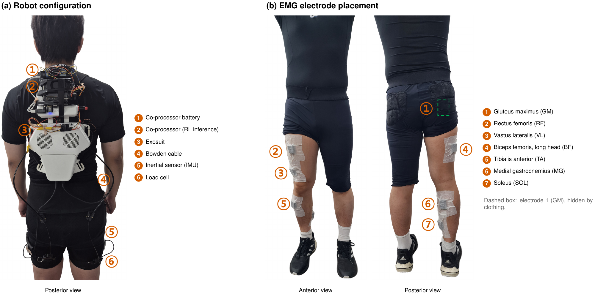
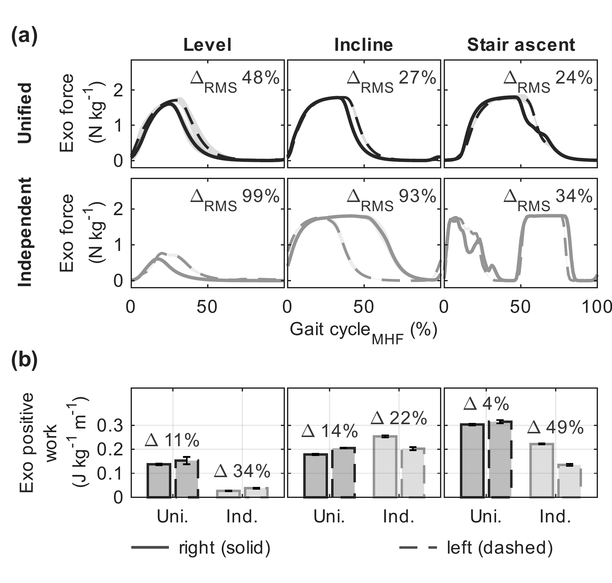
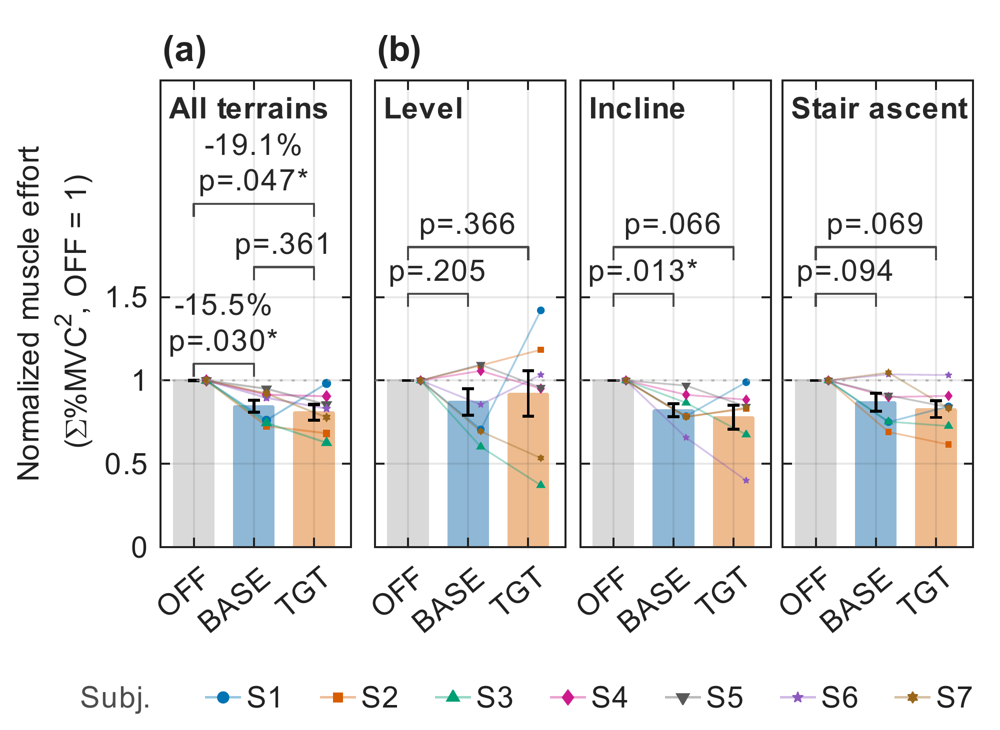
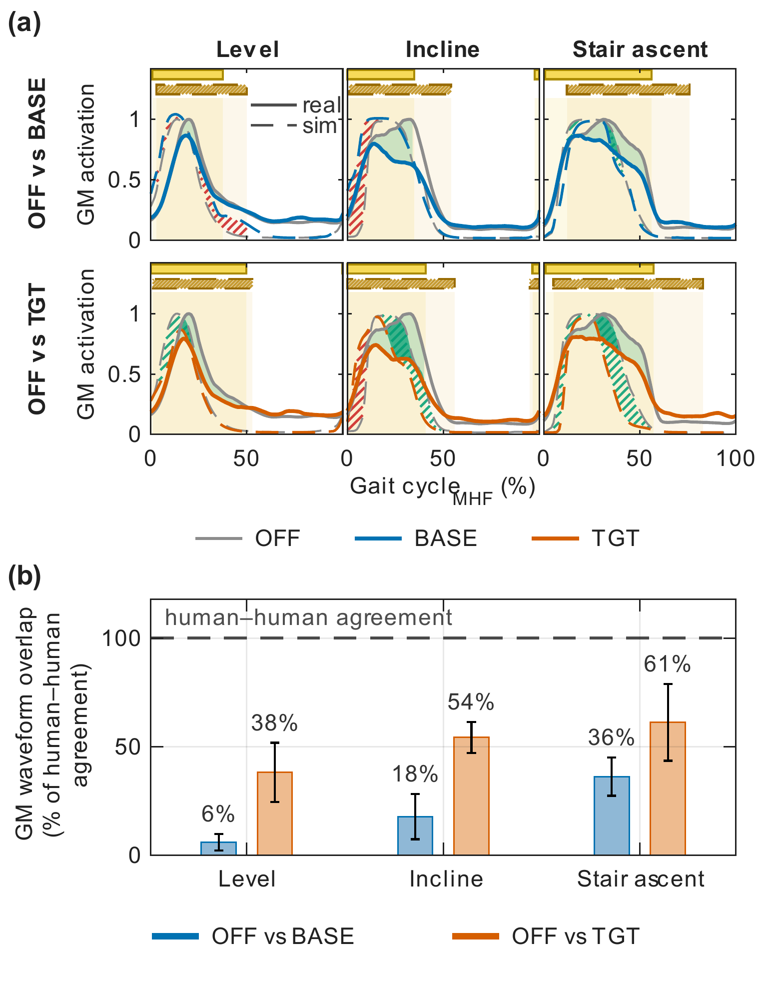
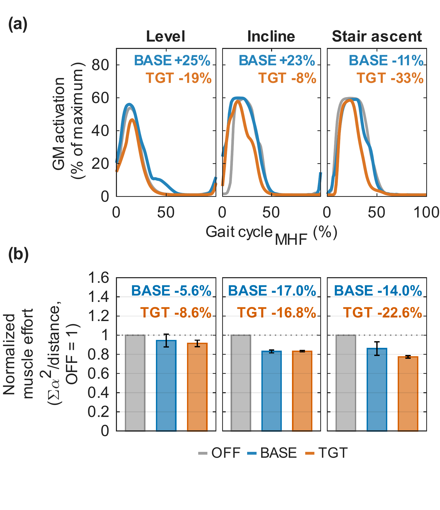
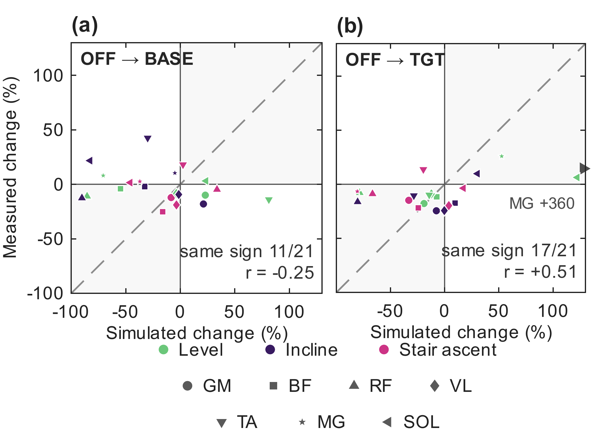

Joint learning
Centralized training with a unified critic and decentralized execution. A matched-actor, matched-reward comparison evaluates an independent-critic alternative.
MANUSCRIPT IN PREPARATION
Chung-Ang University · HUROTICS
This journal manuscript extends Dongmin Go's master's thesis, Synergistic Myomimetic Control of Exosuit via Unified-Critic Reinforcement Learning (Chung-Ang University, 2025). Work in progress; not yet submitted.
This study investigates how a shared critic shapes coordination between a simulated musculoskeletal model and a bilateral hip-extension exosuit. Both policies learn in a coupled physical environment, while only the exosuit policy is deployed on the real device.
The framework covers level walking, incline walking, and stair ascent without reference-motion tracking. On hardware, the controller uses IMU and past-action histories, without requiring terrain labels or muscle-state measurements.

Select any figure to view it at full resolution.
Centralized training with a unified critic and decentralized execution. A matched-actor, matched-reward comparison evaluates an independent-critic alternative.
Policy inference at 50 Hz on a Jetson Orin Nano. Force commands travel over CAN to the robot's 1 kHz low-level controller.
Two reward variants, BASE and TGT, are compared with motor-off assistance in seven healthy participants across three environments.
The muscle and exosuit policies share a unified critic during training. The exosuit policy combines long and short histories of IMU observations and past actions, and the same policy is shared between the left and right sides.

The wearable system combines an onboard inference computer, inertial sensors, and force sensing. EMG electrodes record activity from seven lower-limb muscles during the hardware evaluation.

1 min 49 sec · Device configuration, policy inputs, the training and deployment framework, and a deployed test session. The video includes on-screen explanatory text.
Results reported in the current draft.
Bilateral positive-work differences were 4–14% with a unified critic, compared with 22–49% with independent critics.

Across seven participants and three environments, aggregate effort decreased by 15.5% with BASE and 19.1% with TGT relative to motor-off.
Both policies reduced aggregate effort relative to motor-off. The BASE–TGT difference in this measure was not statistically significant. These are EMG-derived muscle-effort results, not measurements of metabolic energy expenditure.


Simulated and measured changes agreed in direction for 11/21 muscle–terrain combinations with BASE and 17/21 with TGT.

